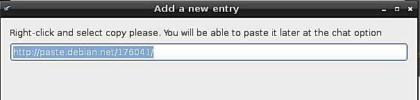

Share log - Rescapp - Documentation
Choose your language.
Share log - Rescapp - Documentation
-
Step 1Rescapp searchs for log files that have been generated by other Rescapp options.
-
Step 2You are prompted for the found files:Please choose a log file

-
Step 3Rescapp sends the log file contents to a public pastebin service (originally paste.debian.net) and gathers associated url
-
Step 4You are prompted:The url And also asked to: Right-click and select copy please. You will be able to paste it later at the chat option


-
Step 5You are supposed to go manually to Chat option (originally under Support menu) and paste there the copied url if you want help. But please be sure that someone is willing to help you before doing it.